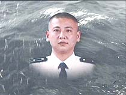

<body bgcolor="#000000" text="#FFFFFF">
<div align="center"><font color=red size=7>我又来了, 美国猪, 去死吧!!!!!!!!!!!!!!!!</font><br>
  <table width="75%" border="0" height="458">
    <tr>
      <td height="169"> 
        <div align="center"><a img="wangwei.jpg" /a></a></div>
      </td>
    </tr>
    <tr> 
      <td> 
        <p align="left"><a img="wangwei.jpg" /a><font size="3"> 4月26日上午，海军航空兵某部官兵和海南省、湖州市党政领导及社会各界群众近千人，<br>
          在祖国南海沉痛祭奠“海空卫士”王伟。 　　王伟烈士的遗像悬挂在陵水机场的机库正前方。上午8时30分，官兵们缓步来到这里，肃立默哀，泣不成声。 
          　　哀乐带不走英雄的音容笑貌，泪水遮不住英雄的矫健身影。在十年的飞行生涯中，王伟以一千多小时空中穿云破雾，2000多架次海空展翅，把自己锤炼成祖国的海天骄子。 
          　　<br>
          官兵们在王伟深深爱恋的战鹰前，尽情表达对英雄战友的崇敬与怀念之情，挥泪与风雨同舟的好战友惜别。 　　<br>
          上午10时30分，亲人和战友们捧着王伟的遗像登上“常德”号战舰，护送王伟魂归大海。南海的万顷碧波卷起亿万朵白浪花，铺满通向英雄魂归的航道；一条条黑色的金锚飘带随海风起舞，汇成献给英雄的挽幛。 
          　　<br>
          11时30分，“常德”舰驶抵海南岛外海域。 　　汽笛长鸣，海天动容；哀乐如诉，撕人心肺。王伟的亲人和战友们在军舰甲板上，将一个个花环，一朵朵鲜花，一片片花瓣，轻轻地抛洒在波峰浪谷中。 
          　　王伟的妻子阮国琴带来了丈夫亲手培植的三角梅；姐姐王琳带来了弟弟最喜欢的映山红；战友王忠带来了英雄锺爱的太阳花…… 　　<br>
          一个个花环，一朵朵鲜花，一片片花瓣，洒向大海；一同洒下的，还有不尽的亲人爱，战友情，哀思泪。 <br>
          <br>
          “王伟，你放心走吧，我会替你加倍疼爱我们的儿子，把他培养成才，报效祖国。”妻子阮国琴有着倾诉不完的哀思。 </font></a></p>
      </td>
    </tr>
    <tr>
      <td>
        <div align="right">By 老王( laowang)</div>
      </td>
    </tr>
  </table>
  
</div>
<!-- www.attrition.org web hack mirror - watermark or something -->
